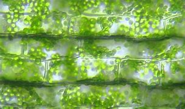

La fotosíntesis es un proceso biológico fundamental que ocurre en las plantas, las algas y algunas bacterias, mediante el cual las células de estos organismos utilizan la luz solar para convertir el dióxido de carbono y el agua en glucosa (un tipo de azúcar) y oxígeno. Este proceso es esencial para mantener la vida en la Tierra, ya que proporciona la energía y los nutrientes necesarios para la mayoría de los organismos.
A nivel biológico, la fotosíntesis se puede dividir en dos etapas principales: la fase luminosa y la fase oscura.
